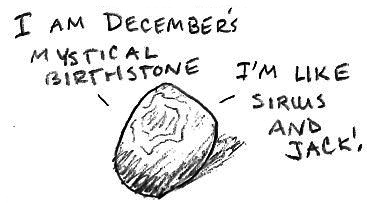

Authors: Erin Rhode, Jason Juang
Each of the grey bands on the finger nails contains a link to cartoon image. Each cartoon illustrates a color in the OPI nail polish catalogue. Using the nail polish color to colorize the bands, each finger nail can now be treated as a resistor with colored bands. Using the resistor color code and mapping the resulting numbers to the alphabet gives the phrase "CAMRYS AND TERCELS." Both are TOYOTAS.
| A Good Man-darin is Hard to Find (Orange) | |
| Orange = 3 = C | |
| Brisbane Bronze (Brown) | |
| Brown = 1 = A | |
| Tickle My France-y (Brown) | In My Back Pocket (Orange) |
| Brown Orange = 13 = M | |
| A-Piers to Be Tan (Brown) | Suzi Takes the Wheel (Grey) |
| Brown Grey = 18 = R | |
| First Date at the Golden Gate (Red) | Here Today Aragon Tomorrow (Green) |
| Red Green = 25 = Y | |
| Sprung (Brown) | Alpine Snow (White) |
| Brown White = 19 = S | |
| Java Mauve-A (Brown) | |
| Brown = 1 = A | |
| Barefoot in Barcelona (Brown) | Need Sunglasses? (Yellow) |
| Brown Yellow = 14 = N | |
| Don't Talk Bach to Me (Yellow) | |
| Yellow = 4 = D | |
|  | |
| An Affair in Red Square (Red) | Black Onyx (Black) |
| Red Black = 20 = T | |
| Gargantuan Green Grape (Green) | |
| Green = 5 = E | |
| Chocolate Moose (Brown) | French Quarter For Your Thoughts (Grey) |
| Brown Grey = 18 = R | |
| Y'all Come Back Ya Hear? (Orange) | |
| Orange = 3 = C | |
| Green-wich Village (Green) | |
| Green = 5 = E | |
| Wooden Shoe Like to Know? (Brown) | Red My Fortune Cookie (Red) |
| Brown Red = 12 = L | |
| San Tan-tonio (Brown) | Funny Bunny (White) |
| Brown White = 19 = S | |